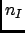
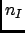
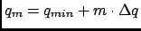
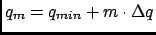
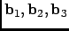
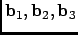
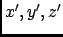
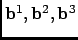
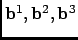
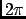

Next: Parameters
Up: Dynamic Coherent Structure Factor
Previous: Dynamic Coherent Structure Factor
Contents
Theory and implementation
Please refer to Section 4.2.5.1 for more details about the theoretical background related to the dynamic
coherent structure factor. In this analysis, nMOLDYN proceeds in two steps. First, it computes the partial and total
intermediate coherent scattering function using equation 4.141. Then, the partial and total dynamic coherent
structure factors are obtained by performing the Fourier Transformation, defined in Eq. 4.134, respectively on
the total and partial intermediate coherent scattering functions.
nMOLDYN computes the coherent intermediate scattering function on a rectangular grid of equidistantly spaced points along
the time-and the q-axis, repectively:
where  is the number of time steps in the coordinate time series,
is the number of time steps in the coordinate time series,  is a user-defined number of q-shells,
is a user-defined number of q-shells,
 is the number of selected species,  the number of atoms of species I, the weight for specie
I (see Section 4.2.1 for more details) and
is the Fourier transformed particle
density for specie I defined as,
is the number of selected species,  the number of atoms of species I, the weight for specie
I (see Section 4.2.1 for more details) and
is the Fourier transformed particle
density for specie I defined as,
The symbol
 in (4.150) denotes an average over q-vectors having
approximately the same modulus
. The particle density must not change if jumps in
the particle trajectories due to periodic boundary conditions occcur. In addition the average particle density,
in (4.150) denotes an average over q-vectors having
approximately the same modulus
. The particle density must not change if jumps in
the particle trajectories due to periodic boundary conditions occcur. In addition the average particle density,
 , must not change. This can be achieved by choosing q-vectors on a lattice which is reciprocal to the lattice defined
by the MD box. Let
 be the basis vectors which span the MD cell. Any position vector in the
MD cell can be written as
, must not change. This can be achieved by choosing q-vectors on a lattice which is reciprocal to the lattice defined
by the MD box. Let
 be the basis vectors which span the MD cell. Any position vector in the
MD cell can be written as
 |
(4.152) |
with  having values between and . The primes indicate that the coordinates are box coordinates. A jump due
to periodic bounday conditions causes to jump by  . The set of dual basis vectors

is defined by the relation
. The set of dual basis vectors

is defined by the relation
If the q-vectors are now chosen as
where k,l,m are integer numbers, jumps in the particle trajectories produce phase changes of multiples of  in the
Fourier transformed particle density, i.e. leave it unchanged. One can define a grid of q-shells or a grid of q-vectors
along a given direction or on a given plane, giving in addition a tolerance for q. nMOLDYN looks then for
q-vectors of the form (4.163) whose moduli deviate within the prescribed tolerance from the equidistant q-grid.
From these q-vectors only a maximum number per grid-point (called generically q-shell also in the anisotropic case) is
kept.
The q-vectors can be generated isotropically, anisotropically or along user-defined directions.
The
may be negative if they represent normalized coherent scattering lenghts, i.e.
Negative coherent scattering lengths occur in hydrogenous materials since is negative [7].
The density-density correlation is computed via the FCA technique described in Section A.
Next: Parameters
Up: Dynamic Coherent Structure Factor
Previous: Dynamic Coherent Structure Factor
Contents
pellegrini eric
2009-10-06